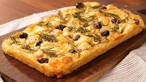

Focaccia
Ingredientes
• 3 xic (360g) de trigo.
• 1 xíc. (240ml) de água.
• 1/4 xíc. (50ml) de azeite
• 1/2 colher de sopa (5g) de fermento biológico
• 1 colher de sopa (10g) de açúcar
• 1 colher de sopa (10g) de sal
• Azeitonas, tomates e temperos (opcional).
Preparo
1. Em uma tigela, misturar a água, o fermen- to e o açúcar e reservar por 5 minutos
2. Adicionar o azeite, a farinha e o sal e misturar.
3. Deixar descansar por 30 min. ou mais.
4. Sovar a massa ate ficar lisinha.
5. Colocar a massa numa forma untada e deixar descansando por mais 30 min.
6. Fazer uma emulsão com água, sale azeite e despejar em cima da massa descansada, fazen- do furinhos com os dedos...
7. Decorar com ervas ou verduras (opcional)
8. Levar ao forno (250°C) por aprox. 25 min.ou até douvar..

Home